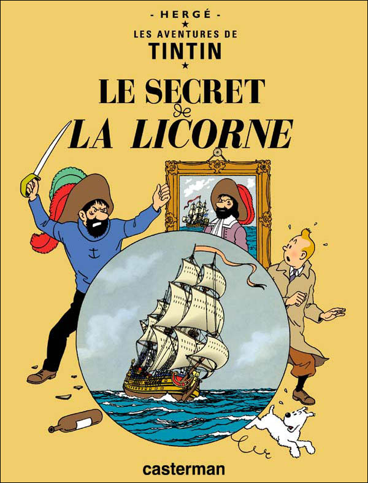

Le Capitaine Haddock est l'un des personnages emblématiques de la série Tintin créée par Hergé. Il apparaît pour la première fois dans "Le Crabe aux Pinces d'Or" et devient rapidement le fidèle compagnon de Tintin. Sa personnalité est marquée par ses colères légendaires, son goût prononcé pour le whisky, notamment le célèbre Loch Lomond, et ses jurons colorés comme "Mille milliards de mille sabords !"

Haddock est à la fois bourru et attachant, un marin au grand cœur. Son château de Moulinsart devient un lieu central dans plusieurs aventures, offrant un contraste entre sa vie de capitaine en mer et celle d’un propriétaire terrien. Malgré ses défauts, il se montre souvent courageux et loyal, prêt à tout pour aider Tintin dans ses aventures.
Un lien pour visualiser la vidéo de présentation du film : Allociné.com